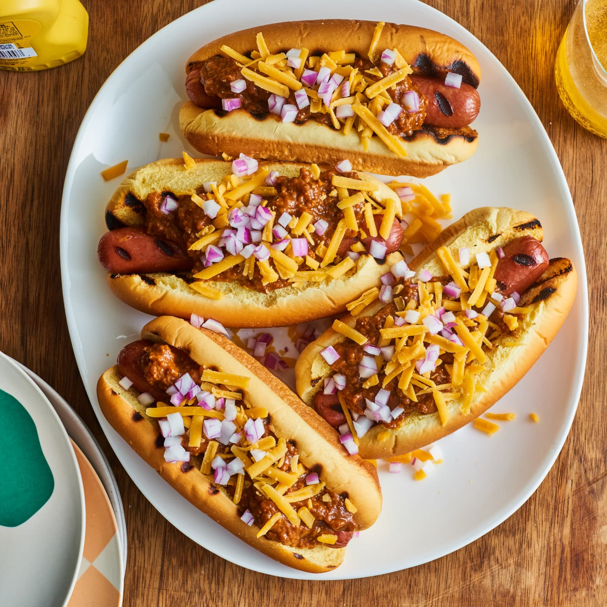

Hot Dogs

Description:
Tender franks boiled and placed in soft, warm buns. Topped with chili, diced onion, and shredded cheddar cheese.
Ingredients
- Hot Dog Franks
- Hot Dog Buns
- Chili (canned)
- Cheddar Cheese (shredded)
- 1 Onion (diced)
Steps
- Boil Hot Dog Franks for 10 minutes. Turn off heat and leave franks in the water.
- Pour contents of Chili can into a small pot and heat on medium-low for 5 minutes.
- Take 1 frank from the water, dry, and then put in 1 bun.
- Spoon Chili on top of frank, then sprinkle onion and cheddar cheese (as much as desired).
- Serve.